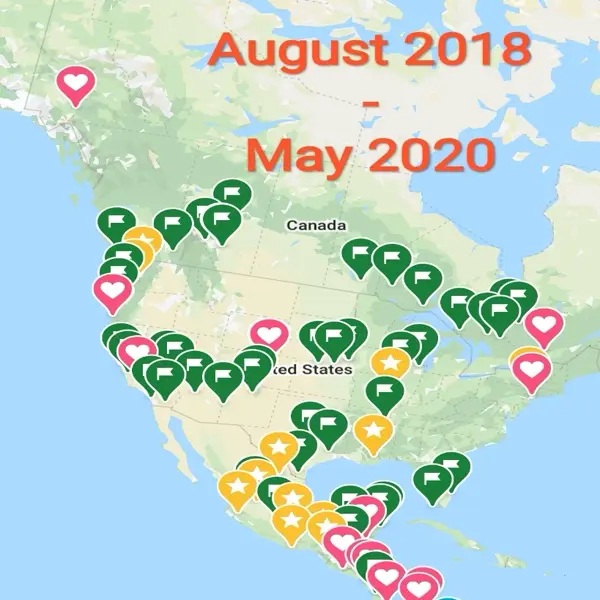
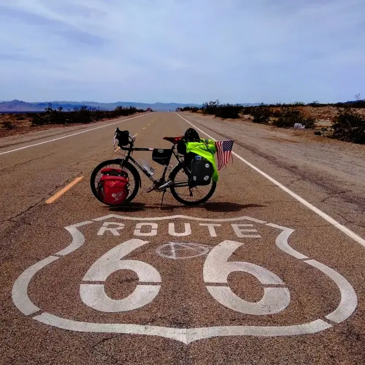
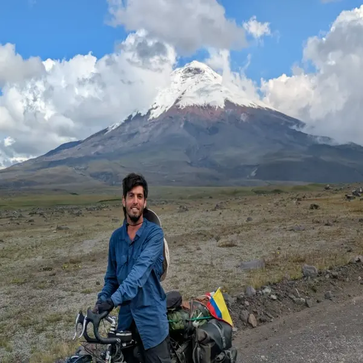
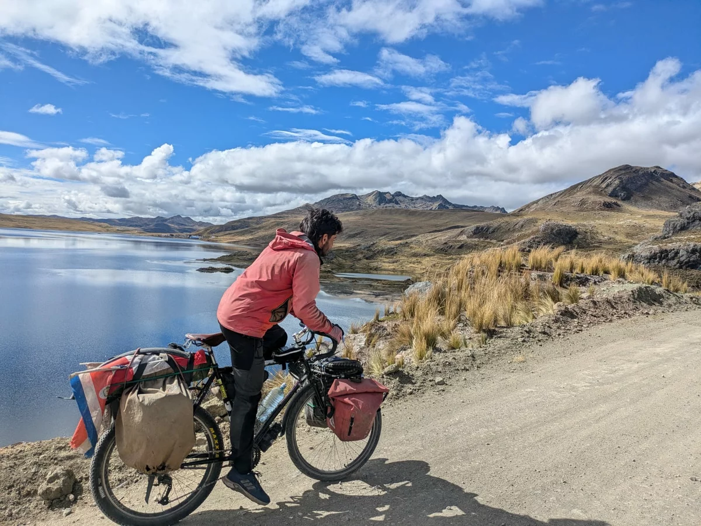
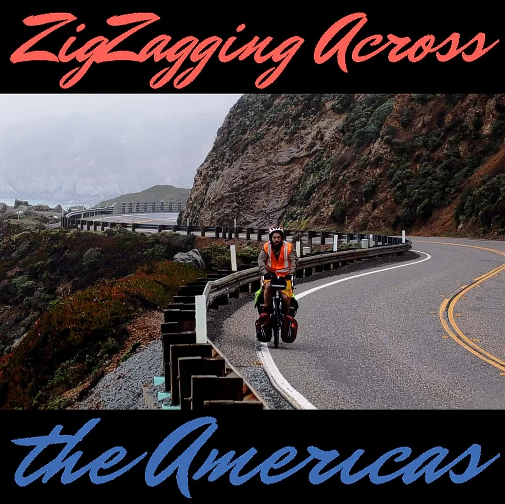
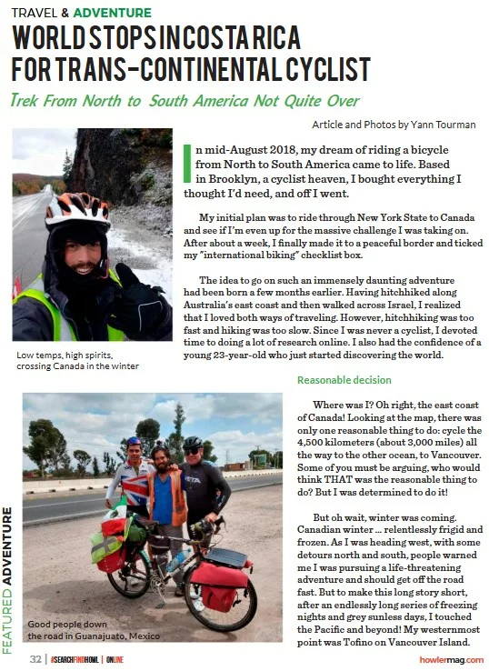
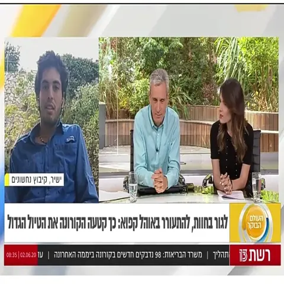

Yann Cohen
Data Analyst
Web Designer
Adventurer
Data Analyst
Web Designer
Adventurer
I love Data, I love Design.
📍 Martinique
I love Data, I love Design.
📍 Martinique
Based in Martinique, a French Caribbean island 🌴.
Data Analyst at my core, open-source contributor at heart, and currently
building simple tools that solve real problems.
I specialize in data manipulation, analysis, and visualization. Open Source got me into web scraping,
vulnerability detection, and other quirky corners of the web 🕸️.
Blown away by latest AI tools and constantly learning and expending my skills, interests and capabilities.
When I'm not building dashboards, you'll probably find me at around 12,000 feet, jumping out of an airplane - 60 jumps and counting 🪂.
curl, REST APIs and Selenium.Python's NetworkX to examine relationships between personality traits in primary school children for an academic study.R open-source ecosystem - including ggplot2 and its extensions.
Authored colourspace, a package for R users building UIs who need simple
color space conversions, and {ggerror}, a ggplot2 extension for error bars.n8n and a decision tree builder for students and educators - both tools have been adopted and are actively being developed based on user feedback.Tesseract OCR, improving data accessibility and search capabilities.NLP methods to analyze free-text comments from engineers, revealing actionable insights.SQL across Azure and PostgreSQL environments to ensure dataset reliability.machine learning models for customer segmentation and supply-chain bottleneck detection.Learning statistics and programming sparked something in me I didn't know existed before. Even as a first-year Psychology student, I found myself teaching not only fellow students, but PhD candidates from different institutions.
random walk family algorithm. Built a live app to explore it interactively.R Shiny framework with basic HTML and CSS.Innsbruck University (Austria)
Ben-Gourion University, final grade: 94 - cum laude


Early on, when I started traveling, I adopted this last name as if to let people around me, and mostly myself, know that this journey is no joke. Let me (try to) start from the beginning.
Somewhere in Australia back in 2017, I got this idea of riding a bicycle the entire length of the globe from north to south. A few months later, on August 21st, 2018, I left Brooklyn, NYC, and headed north. Alaska north.
I returned south and started zigzagging between the coasts, deserts, and valleys of this vast country before eventually entering Mexico. In the next few months, the world was about to change - COVID. I found myself in mid-2020 in Costa Rica, unable to continue further south, I decided to go back home. The bike stayed there.
Fast forward to November 2024 (well, you can read in the sections above what I did all this time). I flew back to Costa Rica and re-launched my bike trip with the intention of reaching my destination: Ushuia, fin del mundo.




I'm in no rush. As one of the podcast titles down below rightfully stated, I don't just ride, I zigzag. So I found myself riding the high Andes, the mighty Amazonas, and - at the time of writing these lines - preparing for a boat-hitchhiking adventure to take me to Martinique, a French Caribbean island.
If you want to read, listen, or watch more, visit the links down below. And if you want to contact me - be it as a programmer or as an adventurer - I'm always glad to share this experience with others.


